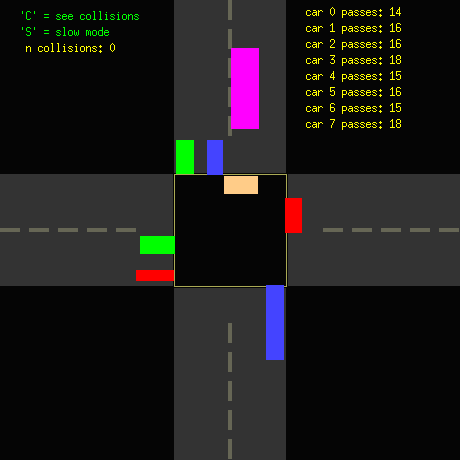

CMPS 3600 · Lab 9
Traffic intersection with threads
Eight cars cross an intersection in an X11 window, each driven by its own thread. Without synchronization they collide; a mutex lets only one car into the intersection at a time. The folder also has phase 3 of the semester project, a live CPU usage display.
What I did
- Started from the instructor's traffic animation, which counts collisions when C is on.
- Added a
pthread_mutex_tfor the intersection: a car locks it on entering and unlocks it after it has driven out. - Wrote
friday.c, a second solution with two semaphores and a count per direction, so cars going the same way can share the intersection while the other direction waits. - Wrote
procstat.candbbphase3.c, which read/proc/stattwice a second and draw a usage bar for each CPU core.
What I used
- C
- POSIX threads
- Mutexes
- Semaphores
- X11
- /proc filesystem
Concepts:
- Mutual exclusion
- Threads in a graphics loop
/procfilesystem
Libraries
| Header or module | What it is for |
|---|---|
X11/Xatom.h | X11 atoms (used to catch the window's close button) |
X11/Xlib.h | Xlib: opening windows, drawing and reading events (X11) |
X11/extensions/Xdbe.h | X11 double-buffer extension for smooth animation |
X11/keysym.h | X11 key names such as XK_Escape |
pthread.h | POSIX threads and mutexes |
semaphore.h | POSIX semaphores |
unistd.h | POSIX calls such as read, write, fork, pipe and sleep |
C standard library: math.h, stdio.h, stdlib.h, string.h, time.h.
Linked with -lX11 (Xlib), -lXext (X11 extensions (double buffering)), -lpthread (POSIX threads).
How to build and run
From the folder with the code:
make
./bblab9Requires: Linux with gcc and POSIX threads. The graphical labs also need the X11 development headers (sudo apt install libx11-dev libxext-dev on Ubuntu). Every folder has a Makefile.
Snapshots
Real runs of the program, captured in a terminal or on a virtual screen.
Collision display is on (C) and the counter stays at 0. Built with -fno-stack-protector because render() overruns a 100-byte string buffer, which Ubuntu's default stack protector stops.


Files
| File | What it is |
|---|---|
bblab9.c | The lab: the intersection with a mutex. |
friday.c | Second solution: same-direction cars share the intersection (semaphores). |
procstat.c | CPU usage bars from /proc/stat. |
bbphase3.c | Phase 3 of the semester project: the CPU usage window (a copy is in lab 15). |
Makefile | Builds all four programs. |